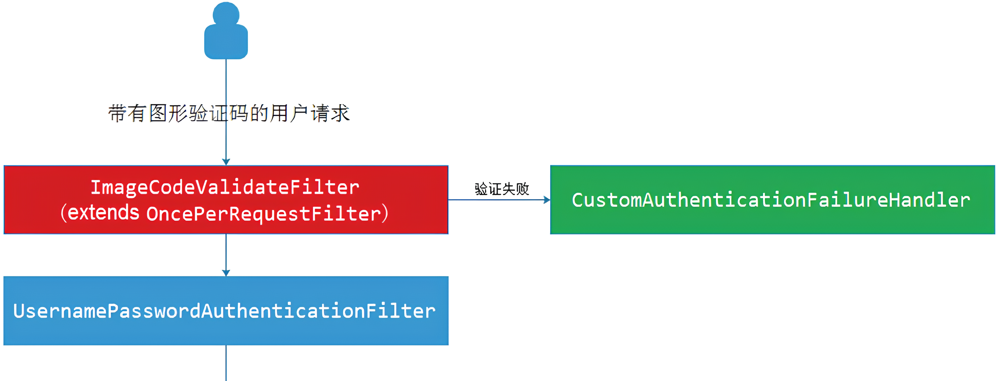
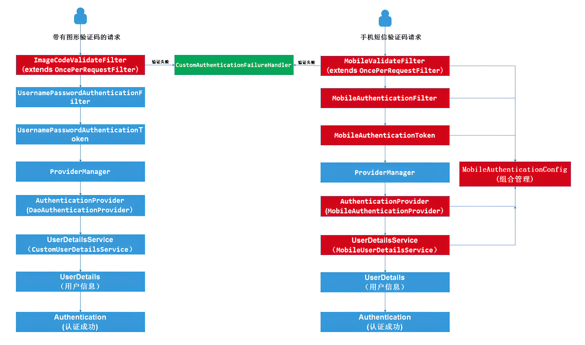

SpringSecurity5（5-自定义短信、手机验证码） | 总字数: 5.6k | 阅读时长: 24分钟 | 浏览量: |
图形验证码
SpringSecurity 实现的用户名、密码登录是在 UsernamePasswordAuthenticationFilter 过滤器进行认证的，而图形验证码一般是在用户名、密码认证之前进行验证的，所以需要在 UsernamePasswordAuthenticationFilter 过滤器之前添加一个自定义过滤器 ImageCodeValidateFilter，用来校验用户输入的图形验证码是否正确。
实现逻辑
自定义过滤器继承 OncePerRequestFilter 类，该类是 Spring 提供的在一次请求中只会调用一次的 filter，确保每个请求只会进入过滤器一次，避免了多次执行的情况
自定义的过滤器 ImageCodeValidateFilter 首先会判断请求是否为 POST 方式的登录表单提交请求，如果是就将其拦截进行图形验证码校验。如果验证错误，会抛出自定义异常类对象 ValidateCodeException，该异常类需要继承 AuthenticationException 类。在自定义过滤器中，我们需要手动捕获自定义异常类对象，并将捕获到自定义异常类对象交给自定义失败处理器进行处理

添加验证码配置
1 2 3 4 5 6 <dependency > <groupId > com.github.penggle</groupId > <artifactId > kaptcha</artifactId > <version > 2.3.2</version > </dependency >
1 2 3 4 5 6 7 8 9 10 11 12 13 14 15 16 17 18 19 20 21 22 23 24 25 26 27 28 29 30 31 32 @Configuration public class KaptchaConfig { @Bean public DefaultKaptcha captchaProducer () { DefaultKaptcha defaultKaptcha = new DefaultKaptcha (); Properties properties = new Properties (); properties.setProperty(Constants.KAPTCHA_BORDER, "yes" ); properties.setProperty(Constants.KAPTCHA_BORDER_COLOR, "192,192,192" ); properties.setProperty(Constants.KAPTCHA_IMAGE_WIDTH, "110" ); properties.setProperty(Constants.KAPTCHA_IMAGE_HEIGHT, "40" ); properties.setProperty(Constants.KAPTCHA_TEXTPRODUCER_FONT_COLOR, "0,0,0" ); properties.setProperty(Constants.KAPTCHA_TEXTPRODUCER_FONT_SIZE, "32" ); properties.setProperty(Constants.KAPTCHA_TEXTPRODUCER_CHAR_LENGTH, "4" ); properties.setProperty(Constants.KAPTCHA_TEXTPRODUCER_CHAR_STRING, "0123456789ABCDEFGHIJKLMNOPQRSTUVWXYAZ" ); properties.setProperty(Constants.KAPTCHA_NOISE_IMPL, "com.google.code.kaptcha.impl.NoNoise" ); Config config = new Config (properties); defaultKaptcha.setConfig(config); return defaultKaptcha; } }
提供验证码接口
1 2 3 4 5 6 7 8 9 10 11 12 13 14 15 16 17 18 19 20 21 22 23 24 25 26 27 28 public class CheckCode implements Serializable { private String code; private LocalDateTime expireTime; public CheckCode (String code, int expireTime) { this .code = code; this .expireTime = LocalDateTime.now().plusSeconds(expireTime); } public CheckCode (String code) { this (code, 60 ); } public boolean isExpried () { return this .expireTime.isBefore(LocalDateTime.now()); } public String getCode () { return this .code; } }
1 2 3 4 5 6 7 8 9 10 11 12 13 14 15 16 17 18 19 20 21 22 23 24 25 26 27 28 29 30 31 32 33 @Controller public class LoginController { public static final String KAPTCHA_SESSION_KEY = "KAPTCHA_SESSION_KEY" ; @Autowired private DefaultKaptcha defaultKaptcha; @GetMapping("/login/page") public String login () { return "login" ; } @GetMapping("/code/image") public void imageCode (HttpServletRequest request, HttpServletResponse response) throws IOException { String capText = defaultKaptcha.createText(); BufferedImage image = defaultKaptcha.createImage(capText); CheckCode code = new CheckCode (capText); request.getSession().setAttribute(KAPTCHA_SESSION_KEY, code); response.setHeader("Cache-Control" , "no-store" ); response.setHeader("Pragma" , "no-cache" ); response.setDateHeader("Expires" , 0 ); response.setContentType("image/jpeg" ); ImageIO.write(image, "jpg" , response.getOutputStream()); } }
1 2 3 4 5 6 7 8 9 10 11 12 13 14 15 16 17 18 19 20 <!DOCTYPE html > <html lang ="en" xmlns:th ="http://www.thymeleaf.org" > <head > <meta charset ="UTF-8" > <title > 登录</title > </head > <body > <h3 > 表单登录</h3 > <form method ="post" th:action ="@{/login/form}" > <input type ="text" name ="username" placeholder ="用户名" > <br > <input type ="password" name ="password" placeholder ="密码" > <br > <input name ="imageCode" type ="text" placeholder ="验证码" > <br > <img th:onclick ="this.src='/code/image?'+Math.random()" th:src ="@{/code/image}" alt ="验证码" /> <br > <div th:if ="${param.error}" > <span th:text ="${session.SPRING_SECURITY_LAST_EXCEPTION.message}" style ="color:red" > 用户名或密码错误</span > </div > <button type ="submit" > 登录</button > </form > </body > </html >
自定义验证码过滤器
1 2 3 4 5 6 7 8 9 10 11 12 public class ValidateCodeException extends AuthenticationException { public ValidateCodeException (String msg, Throwable t) { super (msg, t); } public ValidateCodeException (String msg) { super (msg); } }
1 2 3 4 5 6 7 8 9 10 11 12 13 14 15 16 17 18 19 20 21 22 23 24 25 26 27 28 29 30 31 32 33 34 35 36 37 38 39 40 41 42 43 44 45 46 47 48 49 50 51 52 53 54 55 56 57 58 @Component public class ImageCodeValidateFilter extends OncePerRequestFilter { private String codeParamter = "imageCode" ; @Autowired private AuthenticationFailureHandlerImpl authenticationFailureHandler; @Override protected void doFilterInternal (HttpServletRequest request, HttpServletResponse response, FilterChain filterChain) throws ServletException, IOException { if ("/login/form" .equals(request.getRequestURI()) && "POST" .equals(request.getMethod())) { try { validate(request); } catch (ValidateCodeException e) { authenticationFailureHandler.onAuthenticationFailure(request, response, e); return ; } } filterChain.doFilter(request, response); } private void validate (HttpServletRequest request) { String requestCode = request.getParameter(this .codeParamter); if (requestCode == null ) { requestCode = "" ; } requestCode = requestCode.trim(); HttpSession session = request.getSession(); CheckCode savedCode = (CheckCode) session.getAttribute(LoginController.KAPTCHA_SESSION_KEY); if (savedCode != null ) { session.removeAttribute(LoginController.KAPTCHA_SESSION_KEY); } if (StringUtils.isBlank(requestCode)) { throw new ValidateCodeException ("验证码的值不能为空" ); } if (savedCode == null ) { throw new ValidateCodeException ("验证码不存在" ); } if (savedCode.isExpried()) { throw new ValidateCodeException ("验证码过期" ); } if (!requestCode.equalsIgnoreCase(savedCode.getCode())) { throw new ValidateCodeException ("验证码输入错误" ); } } }
1 2 3 4 5 6 7 8 9 10 11 12 13 14 15 @Component public class UserDetailServiceImpl implements UserDetailsService { @Autowired private PasswordEncoder passwordEncoder; @Override public UserDetails loadUserByUsername (String username) throws UsernameNotFoundException { if ("root" .equals(username)) { return new User (username, passwordEncoder.encode("123" ), AuthorityUtils.createAuthorityList("admin" )); } else { throw new UsernameNotFoundException ("用户名不存在" ); } } }
设置过滤器顺序
1 2 3 4 5 6 7 8 9 10 11 12 13 14 15 16 17 18 19 20 21 22 23 24 25 26 27 28 29 30 31 32 33 34 35 36 37 38 39 40 41 42 43 44 45 46 47 48 49 50 51 52 53 54 55 56 57 58 59 60 61 62 63 @Configuration public class SpringSecurityConfig extends WebSecurityConfigurerAdapter { @Autowired private AuthenticationSuccessHandlerImpl authenticationSuccessHandler; @Autowired private AuthenticationFailureHandlerImpl authenticationFailureHandler; @Autowired private ImageCodeValidateFilter imageCodeValidateFilter; @Autowired private UserDetailServiceImpl userDetailService; @Bean public BCryptPasswordEncoder passwordEncoder () { return new BCryptPasswordEncoder (); } @Override protected void configure (AuthenticationManagerBuilder auth) throws Exception { auth.userDetailsService(userDetailService).passwordEncoder(passwordEncoder()); } @Override protected void configure (HttpSecurity http) throws Exception { http.formLogin() .loginPage("/login/page" ) .loginProcessingUrl("/login/form" ) .successHandler(authenticationSuccessHandler) .failureHandler(authenticationFailureHandler); http.authorizeRequests() .antMatchers("/login/page" , "/code/image" ).permitAll() .anyRequest().authenticated(); http.csrf().disable(); http.addFilterBefore(imageCodeValidateFilter, UsernamePasswordAuthenticationFilter.class); } @Override public void configure (WebSecurity web) throws Exception { web.ignoring().antMatchers("/**/*.css" , "/**/*.js" , "/**/*.png" , "/**/*.jpg" , "/**/*.jpeg" ); } }
手机短信验证码
验证流程
带有图形验证码的用户名、密码登录流程：
在 ImageCodeValidateFilter 过滤器中校验用户输入的图形验证码是否正确。
在 UsernamePasswordAuthenticationFilter 过滤器中将 username 和 password 生成一个用于认证的 Token（UsernamePasswordAuthenticationToken），并将其传递给 ProviderManager 接口的实现类 AuthenticationManager。
AuthenticationManager 管理器寻找到一个合适的处理器 DaoAuthenticationProvider 来处理 UsernamePasswordAuthenticationToken。
DaoAuthenticationProvider 通过 UserDetailsService 接口的实现类 CustomUserDetailsService 从数据库中获取指定 username 的相关信息，并校验用户输入的 password。如果校验成功，那就认证通过，用户信息类对象 Authentication 标记为已认证。
认证通过后，将已认证的用户信息对象 Authentication 存储到 SecurityContextHolder 中，最终存储到 Session 中。
仿照上述流程，我们分析手机短信验证码登录流程：
仿照 ImageCodeValidateFilter 过滤器设计 MobileVablidateFilter 过滤器，该过滤器用来校验用户输入手机短信验证码。
仿照 UsernamePasswordAuthenticationFilter 过滤器设计 MobileAuthenticationFilter 过滤器，该过滤器将用户输入的手机号生成一个 Token（MobileAuthenticationToken），并将其传递给 ProviderManager 接口的实现类 AuthenticationManager。
AuthenticationManager 管理器寻找到一个合适的处理器 MobileAuthenticationProvider 来处理 MobileAuthenticationToken，该处理器是仿照 DaoAuthenticationProvider 进行设计的。
MobileAuthenticationProvider 通过 UserDetailsService 接口的实现类 MobileUserDetailsService 从数据库中获取指定手机号对应的用户信息，此处不需要进行任何校验，直接将用户信息类对象 Authentication 标记为已认证。
认证通过后，将已认证的用户信息对象 Authentication 存储到 SecurityContextHolder 中，最终存储到 Session 中，此处的操作不需要我们编写。
最后通过自定义配置类 MobileAuthenticationConfig 组合上述组件，并添加到安全配置类 SpringSecurityConfig 中。

提供短信发送接口
1 2 3 4 5 6 7 8 9 10 11 12 13 14 15 16 17 18 19 20 21 22 23 24 @Controller public class LoginController { public static final String MOBILE_SESSION_KEY = "MOBILE_SESSION_KEY" ; @GetMapping("/mobile/page") public String mobileLoginPage () { return "login-mobile" ; } @GetMapping("/code/mobile") @ResponseBody public Object sendMoblieCode (HttpServletRequest request) { String code = RandomStringUtils.randomNumeric(4 ); CheckCode mobileCode = new CheckCode (code, 10 * 60 ); request.getSession().setAttribute(MOBILE_SESSION_KEY, mobileCode); return mobileCode; } }
1 2 3 4 5 6 7 8 9 10 11 12 13 14 15 16 17 18 19 20 21 22 23 24 25 26 27 28 29 30 31 32 33 34 35 36 37 <!DOCTYPE html > <html lang ="en" xmlns:th ="http://www.thymeleaf.org" > <head > <meta charset ="UTF-8" > <title > 登录页面</title > <script src ="https://s3.pstatp.com/cdn/expire-1-M/jquery/3.3.1/jquery.min.js" > </script > </head > <body > <form method ="post" th:action ="@{/mobile/form}" > <input id ="mobile" name ="mobile" type ="text" placeholder ="手机号码" > <br > <div > <input name ="mobileCode" type ="text" placeholder ="验证码" > <button type ="button" id ="sendCode" > 获取验证码</button > </div > <div th:if ="${param.error}" > <span th:text ="${session.SPRING_SECURITY_LAST_EXCEPTION.message}" style ="color:red" > 用户名或密码错误</span > </div > <button type ="submit" > 登录</button > </form > <script > $("#sendCode" ).click (function ( var mobile = $('#mobile' ).val ().trim (); if (mobile == '' ) { alert ("手机号不能为空" ); return ; } var url = "/code/mobile?mobile=" + mobile; $.get (url, function (data ){ alert (data); }); }); </script > </body > </html >
自定义短信验证码校验过滤器
更改自定义失败处理器 CustomAuthenticationFailureHandler，原先的处理器在认证失败时，会直接重定向到/login/page?error 显示认证异常信息。现在我们有两种登录方式，应该进行以下处理：
带图形验证码的用户名、密码方式登录方式出现认证异常，重定向到/login/page?error
手机短信验证码方式登录出现认证异常，重定向到/mobile/page?error
1 2 3 4 5 6 7 8 9 10 11 12 13 14 15 16 17 18 19 20 21 22 23 24 25 26 27 @Component public class CustomAuthenticationFailureHandler extends SimpleUrlAuthenticationFailureHandler { @Override public void onAuthenticationFailure (HttpServletRequest request, HttpServletResponse response, AuthenticationException e) throws IOException, ServletException { String xRequestedWith = request.getHeader("x-requested-with" ); if ("XMLHttpRequest" .equals(xRequestedWith)) { response.setContentType("application/json;charset=utf-8" ); response.getWriter().write("认证失败" ); }else { String refer = request.getHeader("Referer" ); String lastUrl = StringUtils.substringBefore(refer, "?" ); super .setDefaultFailureUrl(lastUrl + "?error" ); super .onAuthenticationFailure(request, response, e); } } }
1 2 3 4 5 6 7 8 9 10 11 12 13 14 15 16 17 18 19 20 21 22 23 24 25 26 27 28 29 30 31 32 33 34 35 36 37 38 39 40 41 42 43 44 45 46 47 48 49 50 51 52 53 54 55 56 57 58 59 60 61 62 63 64 @Component public class MobileCodeValidateFilter extends OncePerRequestFilter { private String codeParamter = "mobileCode" ; @Autowired private CustomAuthenticationFailureHandler authenticationFailureHandler; @Override protected void doFilterInternal (HttpServletRequest request, HttpServletResponse response, FilterChain filterChain) throws ServletException, IOException { if ("/mobile/form" .equals(request.getRequestURI()) && "POST" .equals(request.getMethod())) { try { validate(request); } catch (ValidateCodeException e) { authenticationFailureHandler.onAuthenticationFailure(request, response, e); return ; } } filterChain.doFilter(request, response); } private void validate (HttpServletRequest request) { String requestCode = request.getParameter(this .codeParamter); if (requestCode == null ) { requestCode = "" ; } requestCode = requestCode.trim(); HttpSession session = request.getSession(); CheckCode savedCode = (CheckCode) session.getAttribute(LoginController.MOBILE_SESSION_KEY); if (savedCode != null ) { session.removeAttribute(LoginController.MOBILE_SESSION_KEY); } if (StringUtils.isBlank(requestCode)) { throw new ValidateCodeException ("验证码的值不能为空" ); } if (savedCode == null ) { throw new ValidateCodeException ("验证码不存在" ); } if (savedCode.isExpried()) { throw new ValidateCodeException ("验证码过期" ); } if (!requestCode.equalsIgnoreCase(savedCode.getCode())) { throw new ValidateCodeException ("验证码输入错误" ); } } }
自定义短信验证码认证过滤器
仿照 UsernamePasswordAuthenticationToken 类进行编写
仿照 UsernamePasswordAuthenticationFilter 过滤器进行编写
1 2 3 4 5 6 7 8 9 10 11 12 13 14 15 16 17 18 19 20 21 22 23 24 25 26 27 28 29 30 31 32 33 34 35 36 37 38 39 40 41 42 43 44 45 46 47 48 public class MobileAuthenticationToken extends AbstractAuthenticationToken { private static final long serialVersionUID = 520L ; private final Object principal; public MobileAuthenticationToken (Object principal) { super (null ); this .principal = principal; this .setAuthenticated(false ); } public MobileAuthenticationToken (Object principal, Collection<? extends GrantedAuthority> authorities) { super (authorities); this .principal = principal; super .setAuthenticated(true ); } @Override public Object getCredentials () { return null ; } @Override public Object getPrincipal () { return this .principal; } @Override public void setAuthenticated (boolean isAuthenticated) throws IllegalArgumentException { if (isAuthenticated) { throw new IllegalArgumentException ("Cannot set this token to trusted - use constructor which takes a GrantedAuthority list instead" ); } else { super .setAuthenticated(false ); } } @Override public void eraseCredentials () { super .eraseCredentials(); } }
1 2 3 4 5 6 7 8 9 10 11 12 13 14 15 16 17 18 19 20 21 22 23 24 25 26 27 28 29 30 31 32 33 34 35 36 37 38 39 40 41 42 43 44 45 46 47 48 49 50 51 52 53 54 55 56 57 58 public class MobileAuthenticationFilter extends AbstractAuthenticationProcessingFilter { private String mobileParamter = "mobile" ; private boolean postOnly = true ; protected MobileAuthenticationFilter () { super (new AntPathRequestMatcher ("/mobile/form" , "POST" )); } @Override public Authentication attemptAuthentication (HttpServletRequest request, HttpServletResponse response) throws AuthenticationException, IOException, ServletException { if (postOnly && !request.getMethod().equals("POST" )) { throw new AuthenticationServiceException ("Authentication method not supported: " + request.getMethod()); }else { String mobile = request.getParameter(mobileParamter); if (mobile == null ) { mobile = "" ; } mobile = mobile.trim(); MobileAuthenticationToken authRequest = new MobileAuthenticationToken (mobile); this .setDetails(request, authRequest); return this .getAuthenticationManager().authenticate(authRequest); } } @Nullable protected String obtainMobile (HttpServletRequest request) { return request.getParameter(this .mobileParamter); } protected void setDetails (HttpServletRequest request, MobileAuthenticationToken authRequest) { authRequest.setDetails(this .authenticationDetailsSource.buildDetails(request)); } public void setMobileParameter (String mobileParamter) { Assert.hasText(mobileParamter, "Mobile par ameter must not be empty or null" ); this .mobileParamter = mobileParamter; } public void setPostOnly (boolean postOnly) { this .postOnly = postOnly; } public String getMobileParameter () { return mobileParamter; } }
自定义短信验证码认证处理器
仿照 DaoAuthenticationProvider 处理器进行编写
MobileAuthenticationProvider 处理器传入的 UserDetailsService 对象的类型需要我们自定义
1 2 3 4 5 6 7 8 9 10 11 12 13 14 15 16 17 18 19 20 21 22 23 24 25 26 27 28 29 30 31 32 33 34 35 36 37 38 39 40 41 42 43 44 45 46 47 48 49 50 51 52 53 54 55 56 57 58 59 60 61 62 63 64 65 66 67 68 69 70 71 72 73 74 75 76 77 78 79 public class MobileAuthenticationProvider implements AuthenticationProvider { private UserDetailsService userDetailsService; protected MessageSourceAccessor messages = SpringSecurityMessageSource.getAccessor(); private UserDetailsChecker authenticationChecks = new MobileAuthenticationProvider .DefaultAuthenticationChecks(); @Override public Authentication authenticate (Authentication authentication) throws AuthenticationException { Assert.isInstanceOf(MobileAuthenticationToken.class, authentication, () -> { return this .messages.getMessage("MobileAuthenticationProvider.onlySupports" , "Only MobileAuthenticationToken is supported" ); }); String mobile = authentication.getPrincipal() == null ? "NONE_PROVIDED" : authentication.getName(); UserDetails user = this .userDetailsService.loadUserByUsername(mobile); if (user == null ) { throw new AuthenticationServiceException ("该手机号未注册" ); } this .authenticationChecks.check(user); MobileAuthenticationToken result = new MobileAuthenticationToken (user, user.getAuthorities()); result.setDetails(authentication.getDetails()); return result; } @Override public boolean supports (Class<?> authentication) { return MobileAuthenticationToken.class.isAssignableFrom(authentication); } public void setUserDetailsService (UserDetailsService userDetailsService) { this .userDetailsService = userDetailsService; } public UserDetailsService getUserDetailsService () { return userDetailsService; } private class DefaultAuthenticationChecks implements UserDetailsChecker { private DefaultAuthenticationChecks () { } @Override public void check (UserDetails user) { if (!user.isAccountNonLocked()) { throw new LockedException (MobileAuthenticationProvider.this .messages.getMessage("AbstractUserDetailsAuthenticationProvider.locked" , "User account is locked" )); } else if (!user.isEnabled()) { throw new DisabledException (MobileAuthenticationProvider.this .messages.getMessage("AbstractUserDetailsAuthenticationProvider.disabled" , "User is disabled" )); } else if (!user.isAccountNonExpired()) { throw new AccountExpiredException (MobileAuthenticationProvider.this .messages.getMessage("AbstractUserDetailsAuthenticationProvider.expired" , "User account has expired" )); } else if (!user.isCredentialsNonExpired()) { throw new CredentialsExpiredException (MobileAuthenticationProvider.this .messages.getMessage("AbstractUserDetailsAuthenticationProvider.credentialsExpired" , "User credentials have expired" )); } } } }
1 2 3 4 5 6 7 8 9 10 11 12 13 14 15 16 17 18 19 20 21 22 23 @Service public class MobileUserDetailsService implements UserDetailsService { @Autowired private UserMapper userMapper; @Override public UserDetails loadUserByUsername (String mobile) throws UsernameNotFoundException { User user = userMapper.selectByMobile(mobile); if (user == null ) { throw new UsernameNotFoundException ("用户不存在" ); } user.setAuthorities(AuthorityUtils.commaSeparatedStringToAuthorityList(user.getRoles())); return user; } }
自定义短信验证码认证方式配置类
将上述组件进行管理，仿照 SecurityConfigurerAdapter类进行编写
绑定到最终的安全配置类 SpringSecurityConfig 中
1 2 3 4 5 6 7 8 9 10 11 12 13 14 15 16 17 18 19 20 21 22 23 24 25 26 27 28 29 30 31 32 33 34 35 36 37 38 39 40 41 42 43 44 45 46 @Component public class MobileAuthenticationConfig extends SecurityConfigurerAdapter <DefaultSecurityFilterChain, HttpSecurity> { @Autowired private CustomAuthenticationSuccessHandler customAuthenticationSuccessHandler; @Autowired private CustomAuthenticationFailureHandler customAuthenticationFailureHandler; @Autowired private MobileCodeValidateFilter mobileCodeValidaterFilter; @Autowired private MobileUserDetailsService userDetailsService; @Override public void configure (HttpSecurity http) throws Exception { MobileAuthenticationFilter filter = new MobileAuthenticationFilter (); AuthenticationManager authenticationManager = http.getSharedObject(AuthenticationManager.class); filter.setAuthenticationManager(authenticationManager); filter.setAuthenticationSuccessHandler(customAuthenticationSuccessHandler); filter.setAuthenticationFailureHandler(customAuthenticationFailureHandler); SessionAuthenticationStrategy sessionAuthenticationStrategy = http.getSharedObject(SessionAuthenticationStrategy.class); filter.setSessionAuthenticationStrategy(sessionAuthenticationStrategy); http.addFilterBefore(mobileCodeValidaterFilter, UsernamePasswordAuthenticationFilter.class); http.addFilterAfter(filter, UsernamePasswordAuthenticationFilter.class); MobileAuthenticationProvider provider = new MobileAuthenticationProvider (); provider.setUserDetailsService(userDetailsService); http.authenticationProvider(provider); } }
1 2 3 4 5 6 7 8 9 10 11 12 13 14 15 16 17 18 19 20 21 22 23 24 25 26 27 28 29 30 31 32 33 34 35 36 37 38 39 40 41 42 43 44 45 46 47 48 49 50 51 52 53 54 55 56 57 58 59 60 61 62 63 64 65 66 67 68 69 70 71 72 73 @Configuration public class SpringSecurityConfig extends WebSecurityConfigurerAdapter { @Autowired private UserDetailServiceImpl userDetailsService; @Autowired private CustomAuthenticationSuccessHandler authenticationSuccessHandler; @Autowired private CustomAuthenticationFailureHandler authenticationFailureHandler; @Autowired private ImageCodeValidateFilter imageCodeValidateFilter; @Autowired private MobileAuthenticationConfig mobileAuthenticationConfig; @Bean public BCryptPasswordEncoder passwordEncoder () { return new BCryptPasswordEncoder (); } @Override protected void configure (AuthenticationManagerBuilder auth) throws Exception { auth.userDetailsService(userDetailsService).passwordEncoder(passwordEncoder()); } @Override protected void configure (HttpSecurity http) throws Exception { http.formLogin() .loginPage("/login/page" ) .loginProcessingUrl("/login/form" ) .successHandler(authenticationSuccessHandler) .failureHandler(authenticationFailureHandler); http.authorizeRequests() .antMatchers("/login/page" , "/code/image" ,"/mobile/page" , "/code/mobile" ).permitAll() .anyRequest().authenticated(); http.csrf().disable(); http.addFilterBefore(imageCodeValidateFilter, UsernamePasswordAuthenticationFilter.class); http.apply(mobileAuthenticationConfig); } @Override public void configure (WebSecurity web) throws Exception { web.ignoring().antMatchers("/**/*.css" , "/**/*.js" , "/**/*.png" , "/**/*.jpg" , "/**/*.jpeg" ); } }